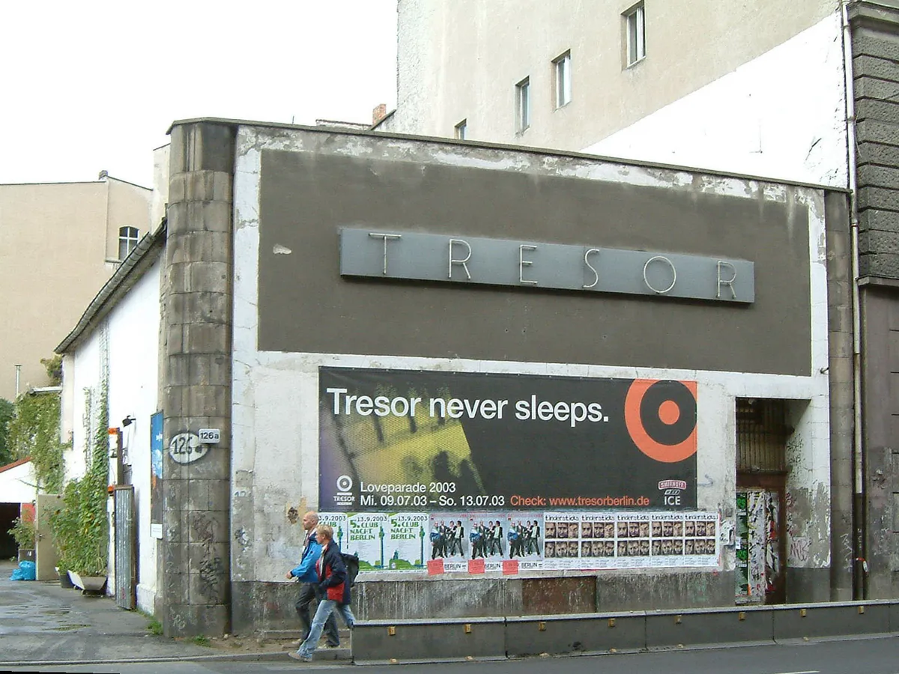
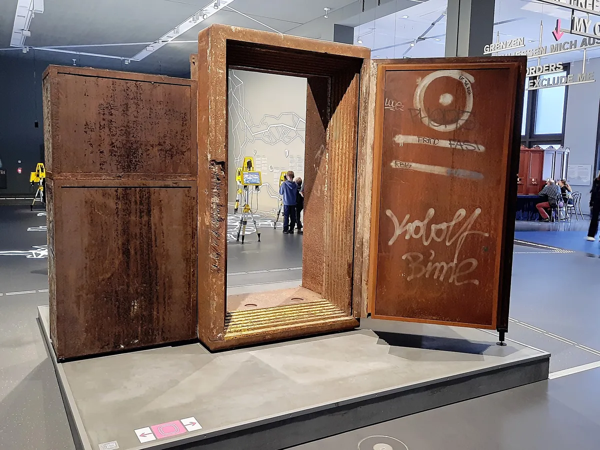
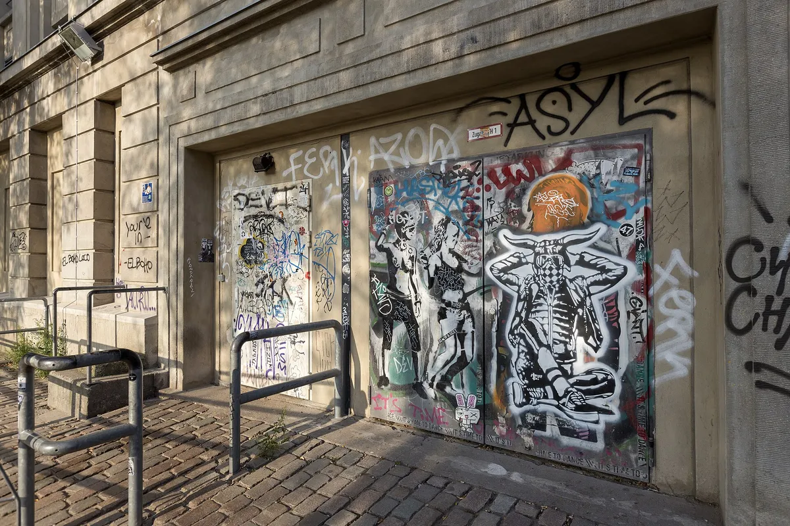
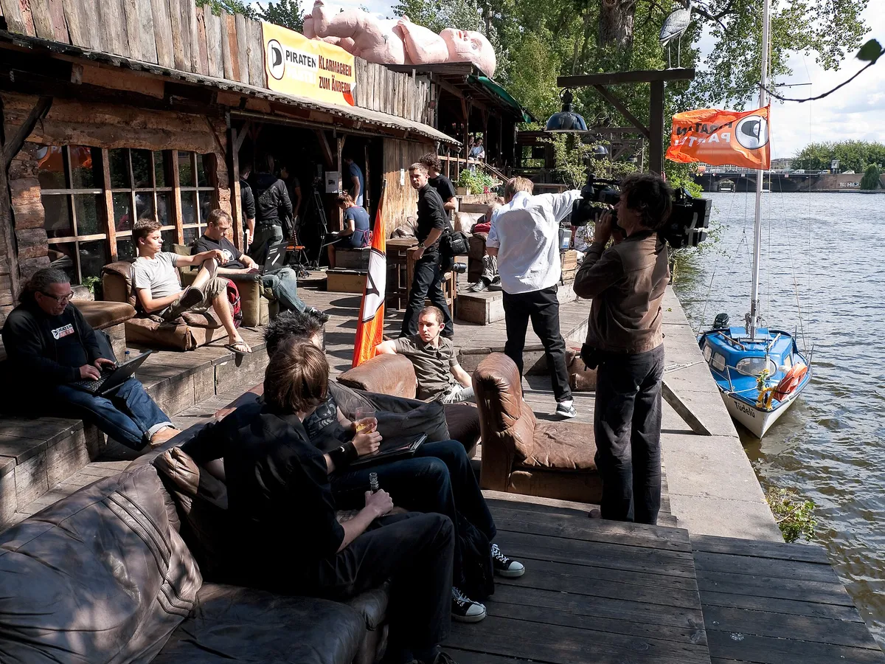
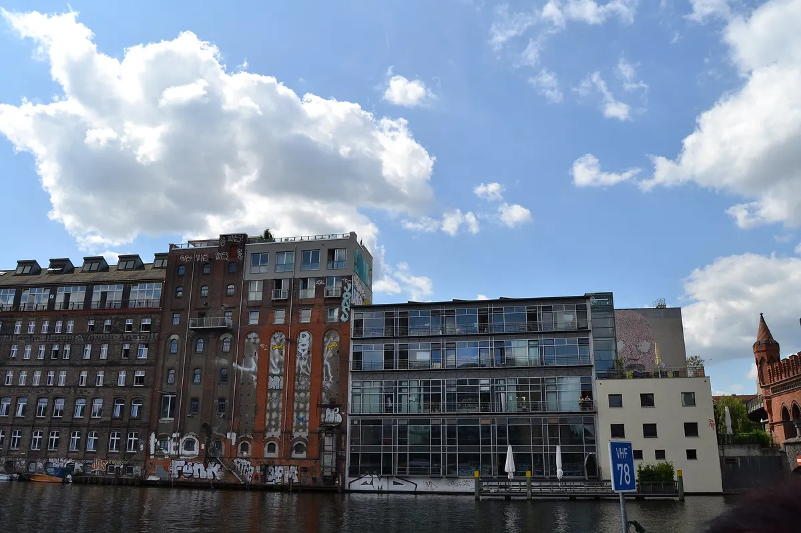
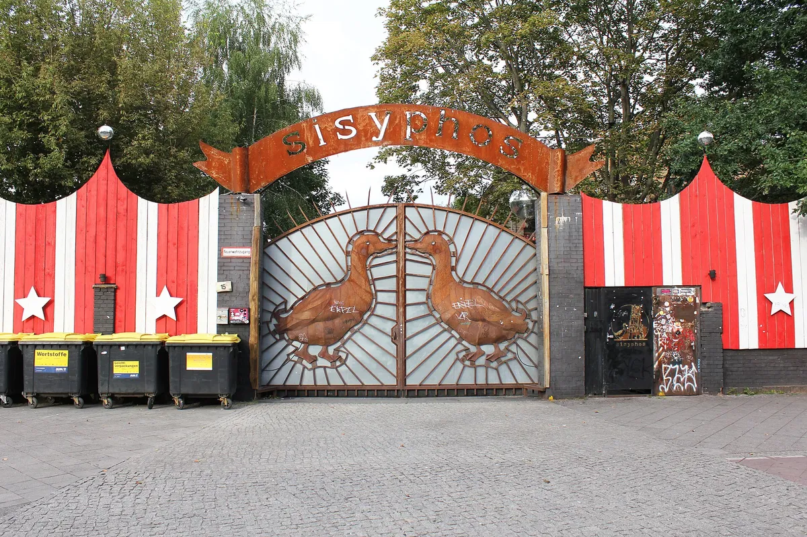

Berlin clubs
The best clubs in Berlin, and the legends behind them
From UFO and Tresor to Berghain and Sisyphos: the rooms that made Berlin a techno city, the famous clubs that closed, and the ones still open.
Legends first, then next weekend.
Most lists of the best clubs in Berlin are guides to next weekend. They are useful and they go out of date within a year, because Berlin clubs open, move, rename themselves and close at a pace that no annual list keeps up with. This one starts further back, with the rooms that made Berlin a techno city, and treats the clubs that are open now as the latest chapter of that story rather than as a ranking.
It is also written by someone who goes. The door and Sisyphos are where that shows. Everything else is sourced, and the status of every open club was checked in September 2026. If you only want the top clubs in Berlin for this weekend, the table in the middle of the page is the short version.
Before Berghain: how Berlin became a techno city.
Berlin club culture as the world knows it began just before the Wall came down and took off in the years straight after. The first room was UFO, opened in 1988 by the people behind the electronic label Interfisch. Wikipedia's history of Tresor calls UFO the original centre of Berlin house and techno. It was small and short-lived: money trouble closed it in 1990.
Its founders moved on. In March 1991 Dimitri Hegemann and a group of investors opened Tresor in the vaults of the former Wertheim department store on Leipziger Strasse in Mitte, only months before reunification. The name is German for safe.

What made Tresor more than a club was its label. Tresor Records started in October 1991 and its first releases came from Detroit: Blake Baxter, Eddie Flashin' Fowlkes, Juan Atkins with 3MB, then Jeff Mills, Robert Hood and Drexciya. Felix Denk, co-author of the Berlin techno oral history Der Klang der Familie, has said that Underground Resistance records made after the group's first Tresor gig sound harder, as if the room had got into the music. Berlin gave Detroit a hard, bare space to play in, and Detroit gave Berlin a sound for the emptied east side of the city.
The book takes its title from Tresor's sixth release, from 1992. It is still the quickest way to hear what that room sounded like.
Other rooms opened in what had been bunkers and power stations. The Reichsbahnbunker on Friedrichstraße, a wartime air-raid shelter, held parties from 1992 until December 1996. E-Werk, a former transformer station opposite the old Reich Air Ministry, ran as a club from 1993 until 24 July 1997. As Denk put it, the buildings became the stars of the scene, not the DJs.
Tresor itself lost its first home. It closed at Leipziger Strasse on 16 April 2005, after years of short-term leases, and reopened on 24 May 2007 in part of a decommissioned power plant, Kraftwerk Mitte on Köpenicker Straße, where it still runs. A door from the original club is now in a museum.

In March 2024 Berlin's techno culture was added to Germany's inventory of intangible cultural heritage, the national list kept under the UNESCO convention. That is the backdrop to every club below.
Berghain and Panorama Bar.
So what is Berghain? The short answer is a techno club in a former heating plant in Friedrichshain. The long answer starts ten years before it opened.
Norbert Thormann and Michael Teufele ran Snax Club from 1994, men-only parties that moved between Berlin venues. In 1998 they opened Ostgut in a former railway repair depot on Mühlenstraße, and Panorama Bar followed two years later in the same building. Ostgut closed in January 2003, when the site was cleared for a new arena.
Berghain opened in December 2004 in the Friedrichshain combined heat and power plant, built in 1953 and abandoned in the 1980s. Panorama Bar reopened in the same building in October 2004. The club rented the building at first and has owned it since 2011.

In 2016 a German court classified Berghain as a cultural institution, which entitles it to a reduced tax rate. Its own rule did more for its reputation: no photographs inside, with a sticker over every phone camera at the door. Almost nothing from inside Berghain circulates, which is exactly why so many people want to know what happens there.
The door
Search for how to get into Berghain and you will find tested guides, rejection odds, outfit lists and videos from people who tried four times in a night. Wikipedia describes the Berghain door policy as notorious for being both strict and opaque, and that is the most honest thing anyone has written about it.
My own experience of that door says there is no system. The rules people read into it exist in their heads. It is something you feel, and not something you can prepare for, and if you are turned away there is no reason to go looking for. Everyone who has been turned away has a theory. None of the theories get anyone in.
The legends that closed.
The famous clubs in Berlin that no longer exist are part of why the city's reputation outlasts any single room.
Bar 25 opened in 2003 on the bank of the Spree in Friedrichshain, near Ostbahnhof, known for costume and confetti parties that could run for 48 hours. It closed in September 2010 with a party that lasted five days. A documentary, Bar25: Tage außerhalb der Zeit, followed in 2012.

The people behind Bar 25 did not leave. They opened Kater Holzig in an old soap factory across the river, and when its company went insolvent they opened Kater Blau on the first weekend of August 2014, at the edge of the old Bar 25 grounds on the north bank. In August 2025 it dropped the colour and became simply Kater.
Watergate opened in October 2002 on the Kreuzberg bank of the Spree, at the Oberbaumbrücke. It reached number eight in DJ Mag's club poll in 2009 and ran its own label from 2008. It closed at the end of 2024, and its operators blamed rising costs and a changing club culture.

Wilde Renate nearly joined this list. In August 2024 the club said it would have to leave its building at the end of 2025, after rent rises of 150 percent over ten years. In December 2025 it withdrew the statement: the lease had been extended. It is open, and it is a fair picture of the pressure every club on the next list is under.
The best clubs in Berlin now.
These are the best Berlin clubs that are open now, as of September 2026: the clubs every serious list agrees on, plus the rooms this page's history leads to. Most are among the best techno clubs in Berlin, but not every one is a techno room. Of the Berlin techno clubs below, Tresor is the oldest. If you want a shorter list of Berlin night clubs to start from, the first four rows are it.
| Club | Where | Opened | Known for | Status, September 2026 |
|---|---|---|---|---|
| Tresor | Köpenicker Straße, Mitte | 1991 (here since 2007) | Detroit and Berlin techno; its own label since 1991 | Open |
| Berghain / Panorama Bar | Friedrichshain | 2004 | Techno and house; no photographs | Open |
| KitKatClub | Brückenstraße, Mitte | 1994 (here since 2007) | Techno; a strict fetish and glamour dress code | Open |
| Kater (formerly Kater Blau) | North bank of the Spree, Friedrichshain | 2014 | Marathon parties; the Bar 25 family | Open |
| Sisyphos | Hauptstraße, Rummelsburg | 2009 | Friday night to Monday morning; five floors | Open |
| Club der Visionaere | Alt-Treptow, on the canal | Early 2000s | Minimal | Open |
| OST | A former power station | n/a | Several rooms in one industrial building | Open |
| Wilde Renate | Near the Elsenbrücke, Friedrichshain | 2007 | Theme parties in a former apartment building | Open; lease extended December 2025 |
Opening hours and door prices change too often to print here. Check each club's own site or its Resident Advisor listing on the week you go.
Sisyphos
Sisyphos is my favourite club in Berlin, and it is the one on this list that least resembles the others.
It started in 2009 as a small, improvised open-air party among friends on the site of a former dog-biscuit factory on Hauptstraße in Rummelsburg. By 2012 the party had become a club. It now has five floors, room for about 1,500 people and a large outdoor area, and from spring to New Year its weekend runs without a break from Friday at 10pm to Monday at 10am.

In 2014 the district shut it down for trading on one-off event licences. The club's answer was a rhyme, "Oh Schreck, oh Schreck, der Lurch ist weg", and it was open again by the end of the year. Die Zeit has described it as smaller and more intimate than clubs of its kind.
Drumcode filmed a set on its floor for the label's radio show.
How Berlin clubs work: dress code, phones, the weekend.
A Berlin club dress code is usually less strict than its reputation, with one real exception. KitKatClub, founded in March 1994 by Simon Thaur and Kirsten Krüger, enforces one at the door: fetish, latex, leather, kinky, high style or glamour, and Krüger herself often works the Saturday door. Most other clubs publish no dress code at all.
Phones matter more than clothes. Berghain covers every camera with a sticker at the door, and nothing from inside is meant to leave the building. That is a large part of why the place is described so often and pictured so rarely.
And the weekend is long. Sisyphos runs from Friday night to Monday morning, Kater is known for marathon parties, and Bar 25's parties ran for two days. Berlin club culture is built around the weekend as a whole, not around a single night.
Hear Berlin before you go.
Half of this page is about rooms you cannot photograph, and some you can no longer visit. The music is easier to reach.
HÖR is a Berlin streaming studio on Karl-Marx-Allee that broadcasts DJ sets six days a week. It is one of the two largest sources in the catalogue behind this site's Selector: 9,708 of its 62,877 sets, from 2019 on. Ellen Allien's hour there is one of the four most watched HÖR sets in the catalogue, and a better introduction to Berlin nightlife than any list.
For the rest, the Selector plays one full set at random from all 62,877, and our guide to the best Boiler Room sets covers the other famous way of filming a club. Berlin techno still sounds like the rooms it was made in. The best way to hear that is to go, and if the door says no, to come back another night.
Berlin clubs FAQ.
What is the most famous club in Berlin?
Berghain, in a former heating plant in Friedrichshain, opened in December 2004. It is the most famous club in Berlin because of its music, its long weekend and a door policy nobody has explained. Tresor, open since 1991, is the older landmark.
Is Berghain hard to get into?
Yes, and nobody can tell you how to get in. Wikipedia calls its door policy strict and opaque, and in my experience there is no system behind it: you feel it or you don't, and there is no point hunting for a reason if you are turned away.
What should I wear to a club in Berlin?
Most clubs have no written Berlin club dress code, and dark, comfortable clothes are the habit. KitKatClub is the exception: it requires fetish, latex, leather, kinky, high style or glamour at the door.
Is Berlin good for clubbing?
Yes. Berlin has clubs that run from Friday night to Monday morning, a techno scene recognised as intangible cultural heritage since 2024, and rooms such as Tresor that date back to 1991.
What happens at KitKatClub Berlin?
KitKatClub, founded in 1994, is a sex-positive techno club with a strict fetish and glamour dress code. It has been in the former SageClub on Brückenstraße in Mitte since July 2007.
Sources.
- Wikipedia: Tresor (club)
- Wikipedia: Tresor Records
- VICE: interview with Felix Denk on Der Klang der Familie, 2014
- Wikipedia: Berghain
- Wikipedia (de): E-Werk (Berlin)
- Wikipedia: Bar 25
- Wikipedia (de): Kater Blau
- Wikipedia (de): Watergate (Club)
- Wikipedia (de): Salon zur Wilden Renate
- Wikipedia: KitKatClub
- Wikipedia (de): Sisyphos (Berlin)
- Tagesspiegel: Jetzt steigt die Party in Lichtenberg, 2014
- FAZE Mag: Sisyphos ist vorerst zu, 2014
- Resident Advisor: Best Clubs in Berlin, 2026
- BBC Travel: How Berlin's techno scene transformed the city and gained UNESCO status, 2024
- HÖR: imprint
Continue reading
Read next.
 A10Guide / Burning Man / ~12 min
A10Guide / Burning Man / ~12 minWhat Is Burning Man? The Event, the City and the Music
A city built in the Nevada desert for a week, with no lineup and nothing for sale, and the sound camps that play anyway.
Read article → A12Guide / London clubs / ~12 min
A12Guide / London clubs / ~12 minClubs in London: The Legends and the Best Ones Open Now
The London clubs that made acid house, jungle, garage and dubstep, from Heaven to the Blue Note, and the best clubs in London open now.
Read article →Live DJ Sets: Where They're Filmed, From Boiler Room to HÖR
Pirate radio, Boiler Room, NTS, The Lot, Cercle, Kiosk and HÖR: a short history of the platforms that film DJ sets, and the numbers behind 62,877 of them.
Read article → A03Timeline / UK music / ~27 min
A03Timeline / UK music / ~27 minThe Evolution of UK Electronic Music
Ten sounds that travelled from regional underground scenes into global culture.
Read article →